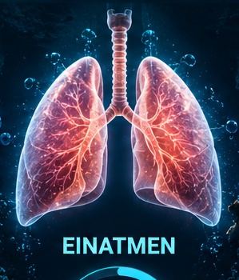

EINATMEN
0.0Sekunden
Gesamtzeit00:00Zyklus0Zielzeit05:00
Zeit00:00Atemzüge0Aktuelle PhaseBereit
Aktuelle Werte (Live)
Ø Einatemzeit–Ø Ausatemzeit–Atemfrequenz–
✓
Atem-Check abgeschlossen!
Deine Ergebnisse
🫁 Atemfrequenz
◷ Ø Einatemzeit
◷ Ø Ausatemzeit
♻ Verhältnis Ein/Aus
◇ Rhythmus-Stabilität
Verlauf der Atemzyklen
💡 Tipp
Logbuch
Deine Tauchgänge und RMV-Werte bleiben lokal auf diesem Gerät gespeichert.
Fortschritt
Atem-Checks0Ø Frequenz–Trainings0